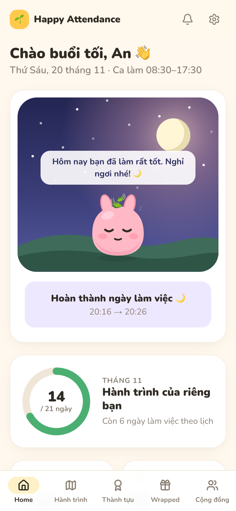
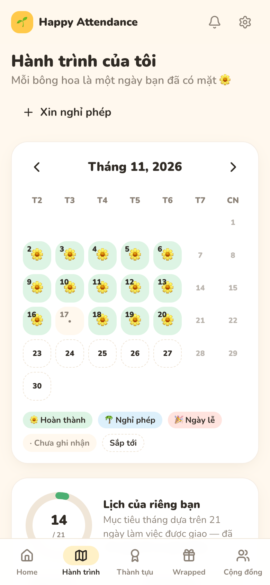
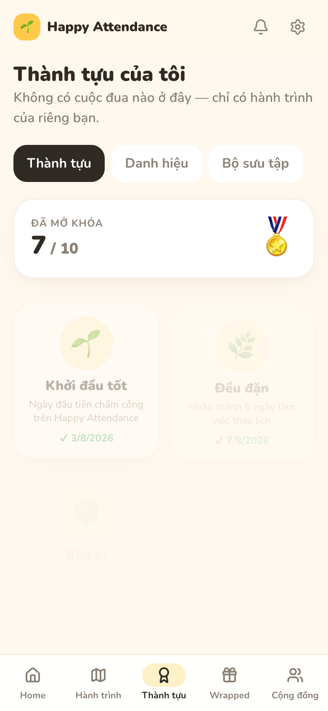
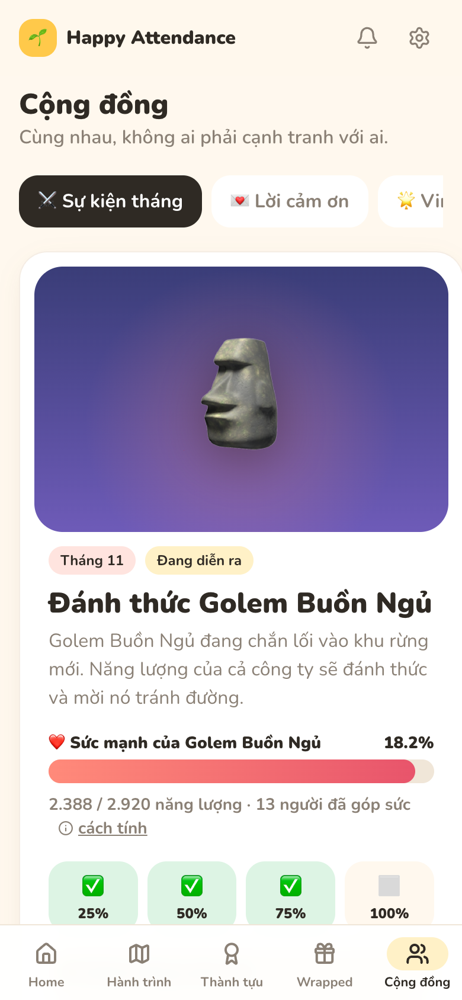
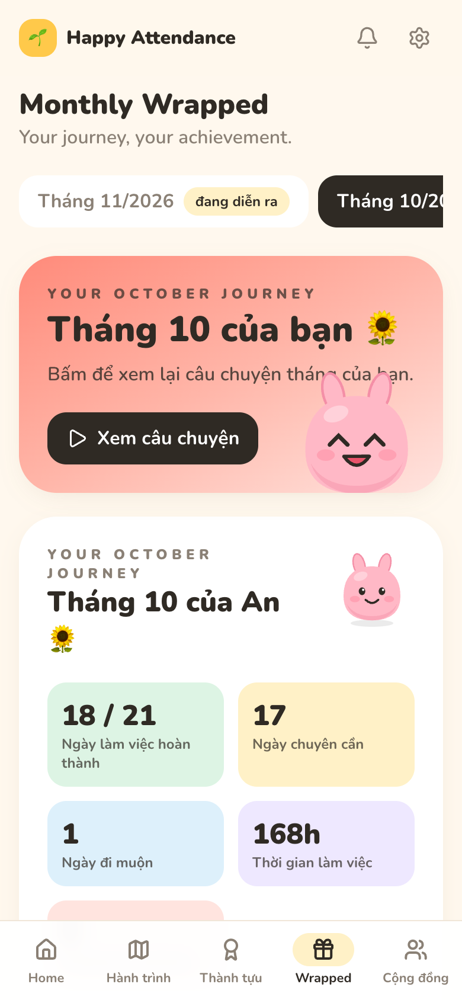
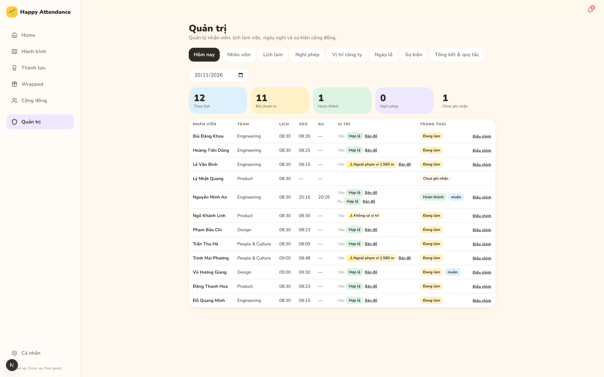

1. Bắt đầu
- Mở ứng dụng trên điện thoại hoặc máy tính, đăng nhập bằng email công ty và mật khẩu được cấp.
- Vào Trang chủ. Nhân vật của bạn sẽ chào bạn theo buổi trong ngày.
- Khi đến nơi làm việc, bấm nút Check-in. Khi tan ca, bấm Check-out.
2. Check-in và check-out
Nút check-in/out nằm ở thẻ chính của Trang chủ. Sau khi hoàn thành ngày, thẻ hiển thị giờ vào → giờ ra (xem hình ở mục 3).
| Tình huống | Điều gì xảy ra |
|---|---|
| Check-in đúng lịch, trong thời gian cho phép | Ghi nhận đúng giờ, nhận XP và confetti 🎉 |
| Check-in muộn quá thời gian cho phép (mặc định 10 phút) | Ghi nhận là đi muộn, vẫn tính ngày làm việc. Không bị phạt. |
| Quên check-out | Hệ thống tự check-out lúc 23:50 |
| Check-in ngoài lịch được giao | Vẫn được ghi nhận nhưng không nhận XP và không cộng năng lượng cho sự kiện |
3. Trang chủ
- Bầu trời và nhân vật: đổi theo buổi trong ngày (bình minh, ban ngày, đêm) và đổi biểu cảm.
- Vòng tiến độ tháng: số ngày bạn đã hoàn thành so với lịch được giao của chính bạn.
- Chuỗi đều đặn, cấp độ / XP và khu vườn lớn dần theo số ngày hoàn thành: 🌰 → 🌱 → 🌿 → 🪴 → 🌳 → 🌸.
- Sự kiện tháng: tiến độ của cả công ty (xem mục 6).
- Chuông thông báo ở góc trên hiển thị thông báo trong app. Âm thanh có thể tắt.
Cấp độ
Cấp n cần tổng cộng 50 × n × (n−1) XP: cấp 2 ở 100 XP, cấp 3 ở 300 XP, cấp 4 ở 600 XP… Lên cấp 2, 3, 4, 5, 7, 10 sẽ nhận vật phẩm tặng kèm.

4. Hành trình và xin nghỉ phép
Trang Hành trình hiển thị lịch tháng:
| Biểu tượng | Ý nghĩa |
|---|---|
| 🌼 | Ngày làm việc hoàn thành |
| 🌴 | Nghỉ phép đã duyệt |
| 🎉 | Ngày lễ |
| Màu trung tính "Chưa ghi nhận" | Ngày chưa có dữ liệu chấm công. Không hiển thị màu đỏ, không phải lỗi. |
Chạm vào một ngày để xem giờ vào/ra chi tiết.

Xin nghỉ phép
- Vào Hành trình, chọn Xin nghỉ phép.
- Chọn ngày và nhập lý do, sau đó gửi.
- Chờ HR duyệt. Bạn có thể hủy yêu cầu của mình khi cần.
5. Thành tựu, danh hiệu và vật phẩm
Thành tựu
| Thành tựu | Điều kiện |
|---|---|
| 🌱 Khởi đầu tốt | Ngày đầu tiên chấm công |
| 🌿 Đều đặn | 5 ngày làm việc theo lịch |
| 🌳 Bền bỉ | 20 ngày làm việc theo lịch |
| 🏡 Khu vườn trăm ngày | 100 ngày làm việc theo lịch |
| 🌻 Một tháng trọn vẹn | Hoàn thành toàn bộ lịch của bạn trong tháng |
| 💎 Kiên trì | ≥ 90% lịch trong 3 tháng liên tiếp |
| 🎨 Người truyền cảm hứng | Nhận 3 lời cảm ơn |
| 💌 Trái tim ấm áp | Gửi 10 lời cảm ơn |
| 🧩 Đồng đội tận tâm | Hoàn thành 5 nhiệm vụ cộng đồng |
| 🛡️ Người bảo vệ thế giới | Góp sức giúp cả công ty hoàn thành sự kiện |
Danh hiệu tháng
Được trao lúc chốt tháng (00:05 ngày 1):
- 🏆 Perfect Month: hoàn thành 100% lịch
- 🌻 Steady Star: ≥ 90% lịch và đi muộn ≤ 2 ngày
- 🌱 Growth Mindset: tiến bộ ≥ 10 điểm % so với tháng trước, hoặc bớt đi muộn
- 🌈 Comeback Star: tháng trước < 70% hoặc nghỉ ≥ 5 ngày, tháng này ≥ 85%
- ☀️ Positive Energy: gửi ≥ 3 lời cảm ơn
- 💚 Reliable Partner: nhận ≥ 3 lời cảm ơn

Trang bị vật phẩm
Vào Thành tựu → Bộ sưu tập, chọn trang phục, nền, đồ trang trí vườn hoặc sticker rồi bấm Trang bị. Nhân vật và khu vườn trên Trang chủ sẽ đổi theo.
6. Cộng đồng và lời cảm ơn
Sự kiện tháng (World Boss)
Mỗi tháng cả công ty cùng góp năng lượng để đạt một mục tiêu chung (đánh boss, trồng cây, thám hiểm…). Bạn đóng góp bằng:
| Hành động | Năng lượng |
|---|---|
| Hoàn thành một ngày làm việc theo lịch | +10 |
| Gửi lời cảm ơn (tối đa 3 lời/ngày được tính) | +3 |
| Mở khóa thành tựu | +15 |
| Hoàn thành nhiệm vụ cộng đồng | +10 đến +20 |
Nhiệm vụ cộng đồng gồm: gửi 3 lời cảm ơn, kết nối liên team, 5 ngày vững vàng, mở khóa 1 thành tựu.

Gửi lời cảm ơn
- Vào Cộng đồng → Appreciation Wall.
- Chọn đồng nghiệp, viết lời cảm ơn chân thành và gửi.
- Lời cảm ơn xuất hiện trên bảng tin chung. Người nhận được thông báo.
7. Wrapped hàng tháng
Sau khi chốt tháng, mở Wrapped để xem câu chuyện của tháng vừa qua, kiểu Spotify Wrapped: so sánh với chính bạn tháng trước, danh hiệu nhận được, thiệp lời cảm ơn. Bạn có thể xuất ảnh PNG để chia sẻ và xem lại lịch sử các tháng.

8. Dành cho Admin (HR) Quản trị

| Mục | Việc có thể làm |
|---|---|
| Tổng quan ngày | Xem ai đã check-in, đi muộn, nghỉ phép trong ngày |
| Nhân viên / team | Thêm, sửa, ngưng nhân viên; gán team |
| Lịch làm việc | Đặt lịch cho từng người (ví dụ T2/T4/T6 cho bán thời gian) |
| Nghỉ phép | Duyệt hoặc từ chối yêu cầu |
| Ngày lễ | Quản lý danh sách ngày lễ của công ty |
| Sự kiện | Chọn chủ đề, độ khó, bấm tính lại mục tiêu |
| Chốt tháng | Chạy chốt tháng thủ công nếu cần (hệ thống tự chạy 00:05 ngày 1) |
| Quy tắc thành tựu | Xem và điều chỉnh điều kiện thành tựu |
9. Câu hỏi thường gặp
Quên check-in thì sao?
Hãy báo HR để được điều chỉnh. Ngày chưa ghi nhận chỉ hiện màu trung tính, không bị tính là lỗi trong app.
Lịch của tôi ít ngày hơn đồng nghiệp, có thiệt không?
Không. Mục tiêu tính theo lịch được giao của từng người, nên lịch 12 ngày và lịch 22 ngày đều có thể đạt 🌻.
Có bảng xếp hạng không?
Không. Đóng góp cá nhân cho sự kiện chỉ chủ nhân nhìn thấy. Phần vinh danh theo danh hiệu được sắp xếp theo tên.
Làm thêm ngoài lịch có được thưởng không?
Không. Chúng tôi không khuyến khích làm quá giờ, nên check-in ngoài lịch không nhận XP hay năng lượng.
Nghỉ ốm dài ngày có mất thành tích không?
Không. Ngày nghỉ không làm đứt chuỗi. Khi quay lại bạn còn có thể nhận 🌈 Comeback Star.
Tôi đăng nhập không được?
Kiểm tra lại email và mật khẩu. Nếu vẫn lỗi, liên hệ HR để đặt lại mật khẩu.